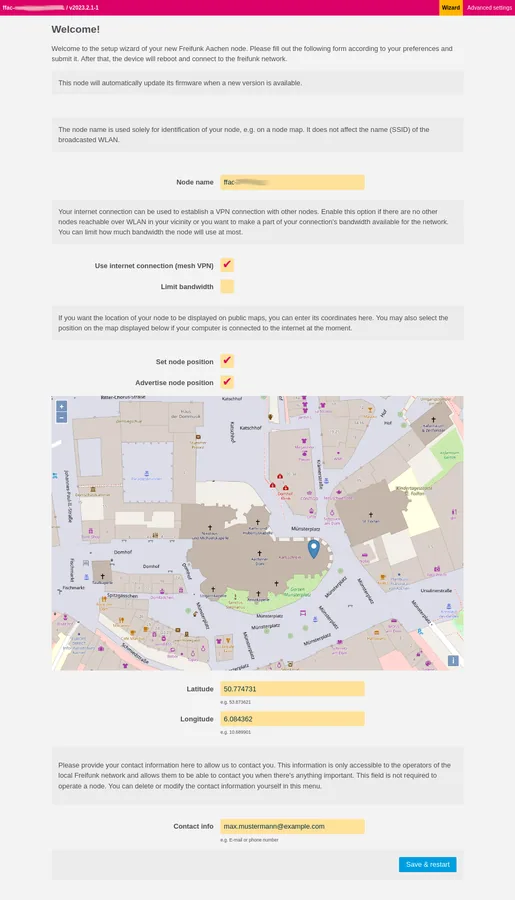

Gluon
- A modular framework for creating OpenWrt-based firmware for wireless mesh nodes.

- 4/5 dimensions have verifiable sources
- Only dimensions backed by verifiable sources are included; unevidenced dimensions remain null rather than receiving a neutral placeholder.
Candidate route
- Candidate use Bring older routers into a community or home mesh network.
- Hardware scope OpenWrt devices considered as wireless mesh nodes; exact targets and images were not checked.
- What is known A modular framework for creating OpenWrt-based firmware for wireless mesh nodes.
- GitHub a modular framework for creating OpenWrt-based firmwares for wireless mesh nodes
- Evidence note E0 discovery candidate; the use description comes from upstream repository metadata or the README opening paragraph. Exact-device compatibility, installation, and long-term stability were not independently verified.
- Review record PS-freifunk-gluon · 2026-10-23T16:51:36Z
Cost evidence
- Used-price range No reliable source
- Modification cost No reliable source
Before you start
- Do not flash, disassemble, or buy parts without installation and recovery material for the exact model, hardware revision, and firmware.
Repository snapshot
- Archived No; not archived when checked
- Last push 2026-10-21T15:50:35Z
- Default branch main
- API license identifier NOASSERTION
- The license snapshot does not automatically cover firmware, models, images, trademarks, or third-party components; a recent push does not prove compatibility.